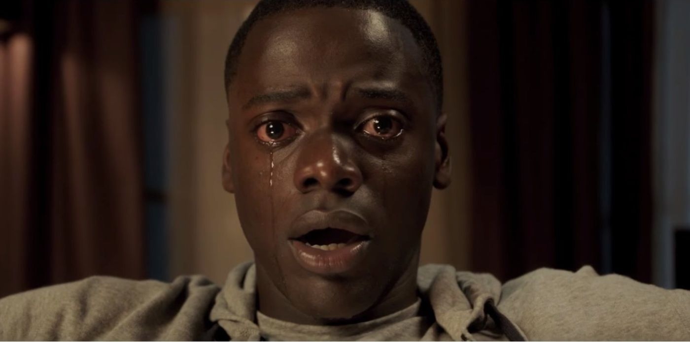
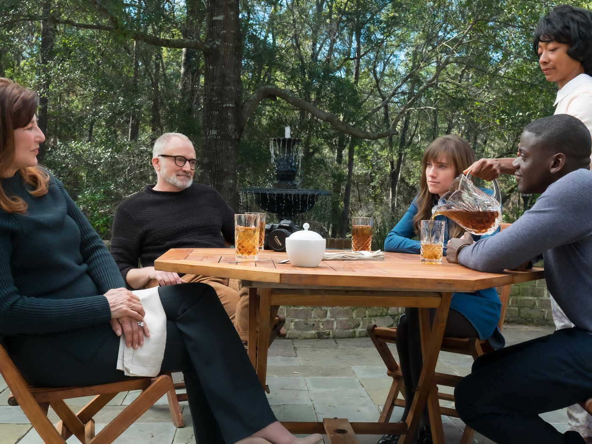
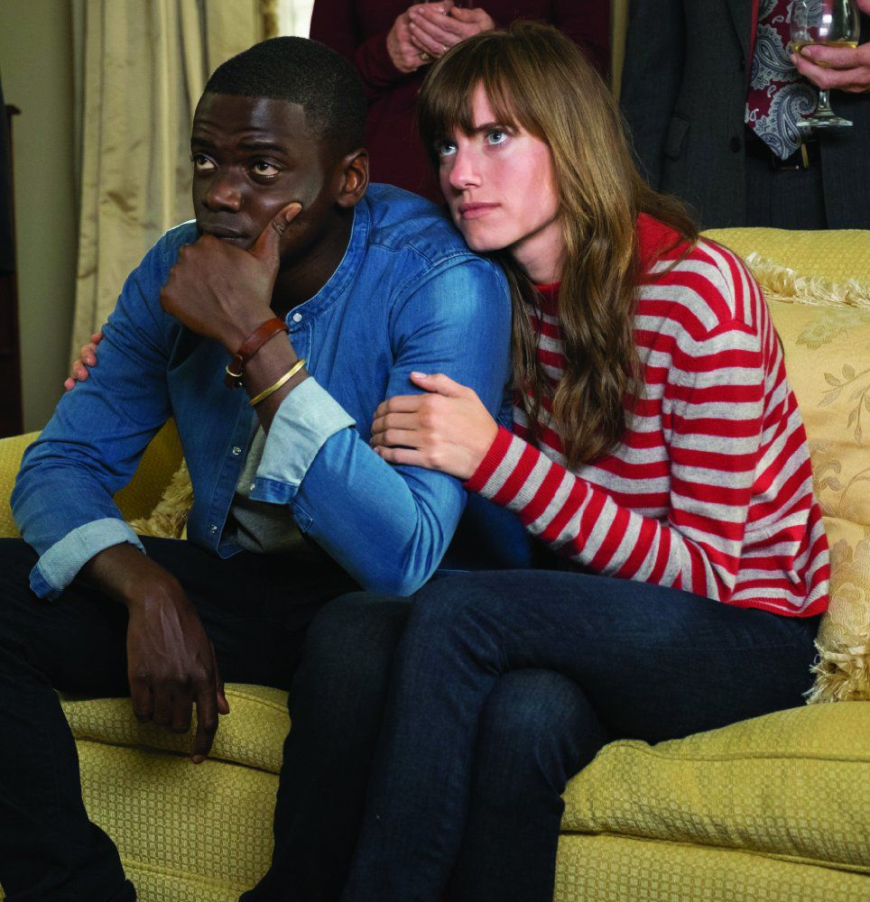

- EXPLAINERS
- POLITICS & POLICY
- WORLD
- CULTURE
- SCIENCE & HEALTH
- IDENTITIES
- MORE

Each year, the Academy of Motion Pictures Arts and Sciences nominates between five and 10 movies to compete for the Oscars' Best Picture trophy - its most prestigious award, and the one given out at the very end of the night. What "best picture" really means is a little fuzzy, but the most accurate way of characterizing it might be that it indicates how Hollywood wants to remember the past year in film.
The Best Picture winner, in other words, is the movie that represents the film industry in America, what it's capable of, and how it sees itself at a specific point in time.
So when we look at the nominee slate for any given year, we're essentially looking at a list of possibilities for the way Hollywood will ultimately characterize the previous 12 months in film. And one thing that's definitely true about the nine Best Picture nominees from 2017 is that they exhibit a lot of variety.
There are genre films and art films, horror films and history films, romances and tragicomedies. And thinking about what the Academy voters - as well as audiences and critics - found enticing about them helps us better understand both Hollywood and what we were looking for at the movies more broadly this year.
In the runup to the Oscars, Vox's culture staff decided to take a look at each of the nine Best Picture nominees in turn. What made this film appealing to Academy voters? What makes it emblematic of the year? And should it win?
In this installment, we discuss Jordan Peele's Get Out, the very funny, very unsettling horror film about a particularly liberal kind of racism. The movie was so popular with critics and audiences that it has remained part of the awards conversation for a whole year, even though it debuted last February. And now it's one of the favorites to take home the big prize.
For me, Get Out was the most startling movie of 2017. It's not that I didn't expect something good - I think Jordan Peele is immensely talented. It's just that I was mostly familiar with his work with Keegan-Michael Key on their sketch comedy show Key & Peele and in their 2016 film Keanu, which was sort of a stoner/buddy comedy. Key & Peele often gave us wonderfully insightful and biting sketches about race in America, but it was definitely sketch comedy. And Keanu was fun, but I found it ultimately forgettable.
So seeing Get Out was something of a revelation, which was clear from literally the start of the film. I'll never forget being in a room full of critics at its first advance screening and feeling it dawn on everyone that we were about to see something major. (And still laughing and screaming and wincing - it's a visceral film to watch.)
It's unusual for a movie like Get Out to remain buzzy throughout awards season, and not just because it's a horror film. Get Out was released in February, and a February release usually means a movie doesn't stick in voters' minds until the end of the year (the last time it happened, it was also for a horror film - The Silence of the Lambs in 1991). I'm not sure that Get Out's film studio had any idea it had this movie on its hands.
And yet here we are. Get Out broke box office records. It's been part of awards conversations since its release. Peele has been repeatedly honored by critics groups and guilds, and several studios have handed him money to make more films.
What is it about Get Out that has made it such a tremendous success? What makes the movie feel like it could represent Hollywood in 2017? Why have we been unable to shake it all year? And do you think it has a chance of winning?
Aja Romano:
And I think that allowed the cultural conversations around the film to keep going and growing, to evolve into discussions about diverse narratives and representation in film, about the way the movie made so many people empathize with the fears of black men, about the way Get Out aligned with the Black Lives Matter movement, and about the way 2017 seemed to be a year of burgeoning success for creators and actors of color in Hollywood.
Another huge factor that kept the film so relevant is that its various metaphors just seemed to stay resonant throughout the year. Even if Peele didn’t intend for the "Sunken Place" to represent the experience of marginalized identities (and progressives) in the Trump era, it became one of the great memes of 2017. And at this point in our internet-addled lives, for a February film to still be an Oscar contender a year later, it probably needs to deliver a great meme.
All these factors allowed Get Out to feel simultaneously universalized and localized - it was universally appealing to horror fans, but it represented a unique perspective familiar to black viewers that was completely hidden to most white liberals before the film allowed them to experience it. In a lot of ways, Get Out was a textbook for white people on how to not just cerebrally understand but viscerally experience the way racism can impact the lives of the people around them. And it was able to succeed because it was a genre film; people came for the scares and left turning over the politics.
P.R. Lockhart:
And of course, when we talk about the impacts of Get Out, we have to remember that it hit theaters right as the Trump administration was settling into the White House. So not only was it a time of transition away from the "post-racial," colorblind era that some people equated with President Obama, but there was a palpable sense of anxiety in communities of color.
I think Peele and everyone involved in Get Out were really smart to have this movie be about a sense of being the only black person in a room full of unfamiliar people and the paranoia and isolation that kicks in even before things actually go haywire. That is something a lot of people were really feeling when it came out, that once again they had entered unfamiliar territory.
I'll bring up one of my favorite parts of the film because I think it gets to this. When Chris (Daniel Kaluuya) is at the big event at his girlfriend's house, there's a moment when he spots one other black guy, Logan (Lakeith Stanfield). And Chris, clearly uncomfortable in this room full of white people, goes to give dap to Logan in an effort to connect with him, and the dude grabs. His. Fist. Like a handshake. It was hilarious, but also really terrifying because it just emphasizes how alone Chris is in this house.
Get Out creates a sense of empathy, but we should also note that it offers validation. While white audiences confront behaviors that they witness but have never had to identify as coming from a place of racism or appropriation or privilege or supremacy, a lot of black audiences are seeing their experiences reflected onscreen and taken seriously - so seriously, in fact, that they are seen as actively being dangerous.
It's a really smart indictment of microaggressions and how black minds are discarded and black bodies are fetishized by those who seem well-meaning. And that requires a really detailed knowledge of what racial issues look like right now, which in turn increases the sense of timeliness and the impact.
It's also just a really good movie.
Alissa:
I also laughed a lot, which is something I'm wondering about. The film was classified as a "comedy" by the Golden Globes, which kicked up some controversy. And it's definitely not only comedy.
What do you two think? Is it also comedy? And do you think putting that label on it takes away from the film or, more importantly, from its most important insights? Or does it enhance them?
Aja:
Peele is, of course, a comedic genius himself, so he knows that amping up the comic moments alongside the scary ones in horror films helps keep audience reactions elevated, and he knows that jokes help even out the suspense. He also knows that in the specific kind of alienated social situation he's allegorizing, we reach for humor as a way of coping. All of the hilarious interplay between Chris and his friend Rod (LilRel Howery) as they half-joke about how Chris is surrounded by scary white people reflects how crucial humor can be as a tool for people of color maneuvering within a white world. And that in itself is a very scary element of the film that also helps make it feel very familiar to viewers.
I think the problem with the Golden Globes' categorization of Get Out isn't necessarily that it's not a comedy - it's that we have so few examples in cinema of black people being able to tell their own stories framed by their own experiences that it's harder to eye-roll and move on than it is when The Martian wins for best comedy or musical. The stakes around what that categorization says for Get Out are so much higher than for more routinized genre films.
P.R.:
As for the Golden Globes category issue, I want to expand on what Aja just said a bit.
As this controversy was picking up last year, Peele released a statement in which he said, "It's important to acknowledge that though there are funny moments, the systemic racism that the movie is about is very real." And then he closed with this: "At the end of the day, call Get Out horror, comedy, drama, action or documentary, I don't care. Whatever you call it, just know it's our truth."
When we think about award-winning films involving black people, we're usually talking about movies that look at slavery or civil rights, or something that puts white people at the center of black stories, or something that frames black struggle as something that has happened versus something that is happening. So to have a such a pivotal movie that turns this dynamic on its head and looks at systemic racism - one that centers on a black guy in a white space and then makes white people the villains - and then to call that movie a comedy, I can see where the frustration comes from. In a way, calling Get Out a comedy can be seen as a slight that kind of makes the film's point.
In the US, we don't speak very thoughtfully about racism for a lot of reasons. But this movie was able to sidestep the defenses and expectations that a more conventional film about race usually faces because it was so outside of what we're used to seeing. So to have that kind of film lead to a discussion of what awards show categories should look like, I think, speaks to the fact that if movies like this and the points they raise aren't being acknowledged in the way we want to see them acknowledged, it's because the real-life issues they're addressing aren't either.
Alissa:
Aja:
P.R.:
But I'm going to have to go with the imagery and concept of the Sunken Place. I think it's something that has really embedded itself in pop culture over the past year.
Alissa:
Get Out's filmmakers shot an alternate ending for the film (which you can watch here), one where that didn't happen. In the alternate ending, everything the audience feared at that moment came true. As an audience member desperately rooting for Chris at that moment, I'm glad they went with the "happier" ending. But I also think it was the right decision even from a storytelling perspective: The "happy" ending made us all visualize the "bad" ending anyhow, and realize how close to reality it could be - and, too often, is.